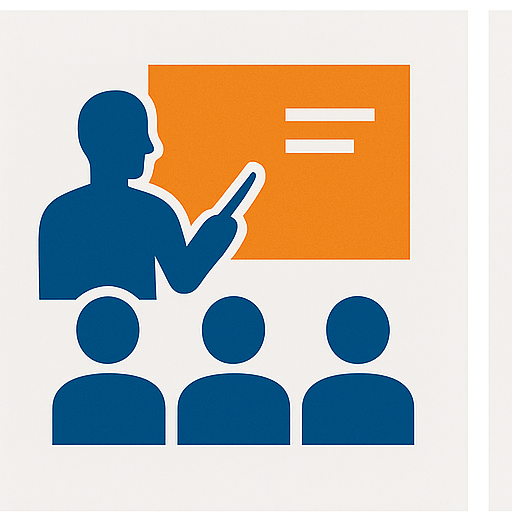

With a focus on industrial safety and emergency response, our training programmes are designed to enhance the capabilities of individuals and organisations across public and private sectors. This page serves as an interface for our Safety & Emergency Response Division and aligns content with JOIFF expectations and industrial best practice, supporting oil & gas operations such as the Badra oilfield.
JOIFF Alignment & Standards
We align our Training & Competency Framework with the JOIFF Competency Framework and relevant NFPA guidance, alongside our path to ISO 9001 / 14001 / 45001. JOIFF Corporate Membership – application in progress.
Competency Matrix
Basic
- Safety induction & incident reporting
- PPE selection and use
- Fire triangle & portable extinguisher use
- Emergency communication basics
Intermediate
- SCBA user fundamentals
- Foam application principles
- Scene management and hazard controls
- Rescue basics and casualty handling
Advanced
- Incident command principles
- Complex foam operations
- Technical rescue (intro)
- HazMat awareness/operations
Assessment
- Pre-/post-knowledge tests (pass ≥ 70%)
- Practical skill checklists (competent/non-competent)
- Trainer observation & feedback notes
- Training records & refresher scheduling
Programmes
Fire & Emergency Response
- Fire Team Basics / Fire Warden
- Foam Operations
- Incident Command Principles
- SCBA User & Controller
HSE Core
- H2S Awareness
- Confined Space Entry
- Working at Height
- Lockout/Tagout & Hot Work / PTW
- First Aid / CPR / AED
Oilfield Support
- Permit to Work
- Tank Farm Fire Readiness
- Emergency Drills & Table-tops
- Spill Awareness
Competency Refresh
- Annual/biannual refresh aligned to risk profile
- Records & validity management
Delivery Modalities
- Classroom + simulations + live field drills
- On-site delivery at client facilities or partner sites
- Table-top exercises for planning and command
- E-learning for theory blocks where feasible
Trainer-to-Trainee Ratio
Target 1:8 in practical sessions for quality and safety control.
Equipment & Facilities
- SCBA sets, extinguishers (Powder/CO₂/Foam), nozzles and hoses
- Foam systems, fire pumps/monitors, communications
- Thermal imaging, basic rescue tools, PPE
- Partner fire ground for live-burn exercises (where applicable)
Safety & Emergency Response Division
Our Safety & Emergency Response Division offers 24/7 on-call services for industrial sites, including fire & rescue, HazMat awareness and incident command, with a special focus on oil & gas operations such as the Badra oilfield. We maintain compliance with NFPA standards and align our emergency response capabilities with JOIFF best practices to ensure readiness, reliability and professionalism.
- Dedicated fire & rescue team available for rapid mobilisation
- Specialised equipment: firefighting units, foam systems, SCBA sets and rescue tools
- Comprehensive training & drills for industrial emergency scenarios
- Integration with HSE management systems and compliance with Iraqi regulations
Quality Assurance & KPIs
Procedures
- SOP‑TRN‑001: Programme Design
- SOP‑TRN‑002: Delivery & Safety
- SOP‑TRN‑003: Assessment & Certification
- SOP‑TRN‑004: Document Control
KPIs
- Completion rate
- Average score improvement ≥ 20%
- Practical audit results (safety drills)
- Trainee satisfaction ≥ 85%
Certification & Records
- Certificates of Completion/Competency with verification ID
- Default validity: 24 months (risk-based)
- Attendance, results, skill checklists and “skills passport”
- Mutual recognition of partner training subject to validation
Refresher Policy
Refresher planning is risk-based and aligned to JOIFF competency levels; schedules are communicated with clients.
Safety & Risk Management
- Programme-specific risk assessments (TRA/JSA)
- First aid plan, heat-stress monitoring, and headcount control
- Participant caps for live scenarios; emergency standby measures
- Liability insurance where required by host site
Governance & Commercial Terms
- Scope of Work (SoW) and readiness Service Level Agreements (SLAs)
- Site requirements: permits, first aid, water/foam, and security rules
- Pricing, payment terms, postponement/cancellation policy
- Local tax/withholding requirements where applicable
Legal Note
References to JOIFF/NFPA indicate alignment for quality improvement. They do not constitute membership or accreditation unless an official certificate/notice is issued by the relevant body.
Attachments Checklist
- Company registration, Chamber of Commerce ID, and Tax ID (English translations included)
- Programme specifications (objectives, duration, outcomes)
- Trainer CVs (international leads + local crew)
- Assessment templates (pre/post tests, practical checklists, satisfaction survey)
- Sample certificates and verification process
- Training log and skills passport samples
- Quality SOPs (TRN‑001..004)
- Safety plan per programme + TRA/JSA
- Available equipment list
- Compliance statement (JOIFF/NFPA & ISO alignment; membership “application in progress”)
Contact
Nahj Al-Rasanah LLC – Safety & Training Division
Badrah District, Wasit Governorate, Iraq
- E-mail: training@nahjalrasanah.com
- Website: www.nahjalrasanah.com
- WhatsApp & Telegram: +964 784 349 9555